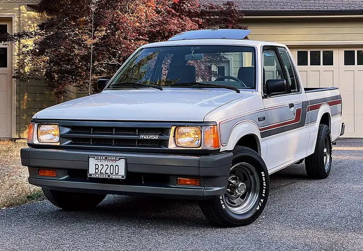
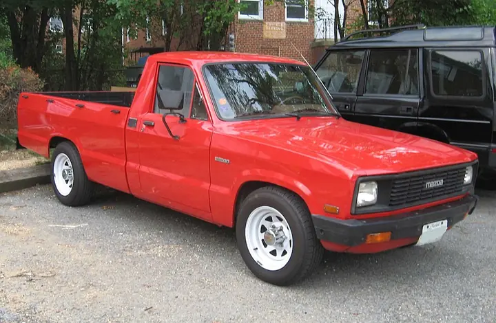
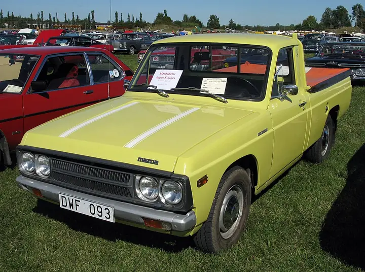
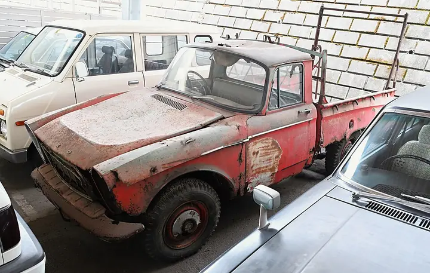

Mazda B series
Fifth generation (UN; 1998–2006) · 1998–2006
Abstract
This generation of the Mazda B series was built 1998–2006 in Thailand: Rayong (AAT), Colombia: Bogotá, Philippines: Santa Rosa, Laguna and other plants. Body styles: 2-door pickup, 2-door pickup (extended cab), 4-door "Freestyle" pickup (suicide rear doors), 4-door pickup. Layout: Front-engine, rear-wheel-drive.

_DX_2-door_cab_chassis_(2011-12-06).jpg){kind=link}
1Specifications
| Production | 1998–2006 |
|---|---|
| Assembly | Thailand: Rayong (AAT)Colombia: BogotáPhilippines: Santa Rosa, LagunaSouth Africa: PretoriaVietnam: Hai Duong (Ford Vietnam)Zimbabwe: Willowvale (Willowvale Motor Industries) |
| Body style | 2-door pickup2-door pickup (extended cab)4-door "Freestyle" pickup (suicide rear doors)4-door pickup |
| Layout | Front-engine, rear-wheel-driveFront-engine, four-wheel-drive |
| Engine | Petrol engines:2.2 L F2 I42.6 L G6E I44.0 L Cologne SOHC V6 (2005-06, Australia)Diesel engines:2.5 L WL I42.5 L WL-T turbo I42.9 L W9 I4 |
| Transmission | 4-speed automatic5-speed automatic (4.0 V6 models only)5-speed manual |
| Wheelbase | 2985 mm (2WD)3000 mm (4WD) |
| Length | 4998 mm (without rear step bumper and licence plate holder)5005 mm (with licence plate holder)5128 mm (with rear step bumper)5135 mm (with rear step bumper and licence plate holder) |
| Width | 1695 mm (without rear wheel arch extensions)1750 mm (with rear arch wheel extensions) |
| Height | 1615 mm (2WD, Single Cab & Stretch Cab)1625 mm (2WD, Double Cab)1740 mm (4WD, Single Cab & Stretch Cab)1750 mm (4WD, Double Cab) |
| Weight | 1333 kg |
| Also called | Mazda Bravo (Australia)Mazda FighterMazda Proceed |
| Related | Ford Ranger/Courier (PE/PG/PH)Ford Everest (first generation) |
2Versions
- Ford Courier / Ranger
3Previous generations





.jpg){kind=link}


4Generation by generation
Length +20% from the first to the last
1961–1965 19614,150 mm
1965–1977 19654,370 mm
PE 19774,445 mm
UF 19854,641 mm
UN 19984,998 mm